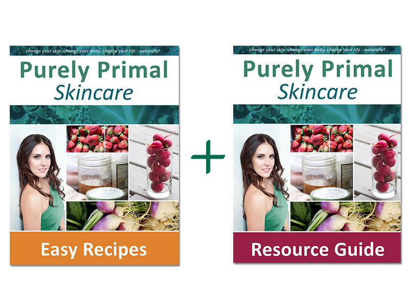

Unlock Your Hip Flexors Review - Does It Really Work?
Would you like to know what kind of damage you are doing to your body by sitting on your ass all day long? I mean that’s what most of us humans do, we’re constantly sitting. But did you know how this affects the muscles of your pelvic region, your blood flow, your posture, and even your stress levels and hormones?
According to Rick Kaselj’s ‘Unlock your Hip Flexors’ program, tight hip flexors (or psoas as is their right name) are extremely common, and will without a shade of doubt lead to poor posture, back pain, impaired circulation to the pelvic region & legs, sub-par range of motion during exercise, and even hormonal changes.
The question is, how much of this is true and does the program really help you unlock and release your tight psoas muscles?
Already Decided?
That's great! Click the button on your right and take the action now.
How Good is ‘Unlock your Hip Flexors’ Really?
I don’t normally care that much about stuff that is related to stretching, and you might wonder what is this kind of review even doing in a natural T-optimization blog, so allow me to explain how I got into reading the program.
I used to be really athletic as a kid and had absolutely no problems with general mobility or any muscle pain, but when I got to around 15-years of age, I for some reason just started playing on the computer and Playstation A LOT.
So much so, that in a year my posture had gotten to a pretty bad state, so bad that my father decided it was a time for me to go see a physiotherapist, the kind physio-man then ran some tests on me and quickly concluded that I had something called “anterior pelvic tilt”, which means that my pelvis was tilted in to a “forward” position, causing my back to round and my ass to look like one of Donald Duck’s.
As you might guess, I was “prescribed” a set of stretches, and sent home. I did the stretches for few weeks, didn’t notice a difference, and then just stopped…
Few years after that, I got interested in bodybuilding and hitting the gym. I gained some mass, got pretty strong, and then at some point started noticing that my lower back was always pretty sore after working out legs and back, and that my range of motion wasn’t good enough on many important movements, which eventually got me into thinking that my “anterior pelvic tilt” was probably still causing problems. After all, I never really fixed it.
That’s when I decided to really take matters into my own hands and started doing research on what caused the problem and to fix it. This eventually led me into a conclusion that I had really tight hip flexors (as the physiotherapist had concluded too), and that I need to find a sustainable way to get them back to normal flexibility. Aaand that’s precisely when I found out the Unlock your Hip Flexors program.
With a tight psoas from sitting all day your hips will become fixed in a forward thrust position causing your pelvis and leg(s) to rotate. This forward tilt will cause your hip socket to become compressed leading to pulling and shifting of joints, tendons, and muscles pulling on your lower back. This pulling on the lower back WILL decrease blood flow and circulation as well as delayed nerve response to the hips. -Rick Kaselj
The pros of the program:
The main PDF is 63-pages long and clearly explains the functions of the psoas and why it’s one of the most important muscles in the body.
Includes static & dynamic stretches, mobility exercises, fascia stretches, muscle activation movements, core exercises, and PNF stretching.
The program was simple enough to do daily, since it only consists of 10 clearly demonstrated steps and takes about ~10 minutes.
The program itself has a FaceBook following of over 250,000 people, indicating that it has worked for other people too.
Unlock Your Hip Flexors is really cheap and comes with a no-questions asked 60 day money back guarantee.
The author is a certified specialist in sports injuries.
The cons of the program:
The claims that tight psoas will ruin your life and that you MUST unlock them are ridiculous, I lived just fine with them for years.
After your purchase you will be pitched A LOT of add-ons including: 101 anti-aging foods, pain prevention for knees, shoulders, neck, etc.
The claim that tight psoas will eventually increase the rate of fat storage in the body is fairly dumb and seems to be just a sales tactic.
How does Unlock your Tight Hip Flexors compare to other similar programs?
There are many many stretching programs – paid and free – on the internet and in book stores. Many of them only focus on static stretching and fail to properly explain the biomechanics of the actual muscle and why you should stretch it in correct ways. On this aspect, I’d say that Unlock your Hip Flexors is one of the best ones around.
A mobility program that is somewhat similar to this one is called Becoming a Supple Leopard by Dr. Kerry Starrett, it’s a really good book (perhaps even better), but more focused on athletes and covers a lot of more body parts than just the hip flexors. If you’re looking for a program that improves your full-body mobility and athletic performance, I would go for Starrett’s book. However if you’re more interested in specifically the muscles of the pelvic region, opt for Kaselj’s Unlock your Hip Flexors PDF.
Are there any bonuses in the program?
As I mentioned above, there are a lot of options to buy add-ons after your purchase of the main book. However there are also two free items that come for free with the purchase of the actual program, they are: “the 7 day anti-inflammatory diet e-book” and “unlock your hamstrings manual”.
Are there people that you don’t recommend the program for?
Obviously if you’re already very mobile and don’t sit a lot, then you probably don’t need to stretch your psoas and have no use for a program like this.
What Are You Waiting For?
Your Purchase is Backed Up by 30 Days Money Back Guarantee. If You Don't Like The Product, Give It Back And You Will Be Refunded With No Questions Asked!
Conclusion
In my opinion the Unlock your Hip Flexors PDF deserves a rating of 4 stars. It’s a good solid program that will guarantee results for people who actually perform the movements, it’s also relatively cheap and comes with a full 60 day money back guarantee.
The reason why it doesn’t get full 5-stars is because of the ridiculous pushing of the add-on items after purchase (these could be all made into one more broad book). There’s also too many unproven claims about the benefits of well-stretched psoas that are probably just part of the sales tactics (they don’t really take anything away of the effectiveness of the actual program though).
Recent Post
Bow Legs No More - Looking for a Permanent Remedy for Bow Legs Without the Need for Surgery?
 Beauty/
Beauty/
Purely Primal Skincare Guide Review - Does It Really Work ?
 Beauty/Ageless Body System - HOW TO BE INSTANTLY AGELESS?
 Addiction/
Addiction/
QUIT SMOKING MAGIC REVIEW
 Addiction/
Addiction/
ALCOHOL FREE FOREVER - HOW TO QUIT DRINKING TODAY FROM THE PRIVACY OF YOUR HOME